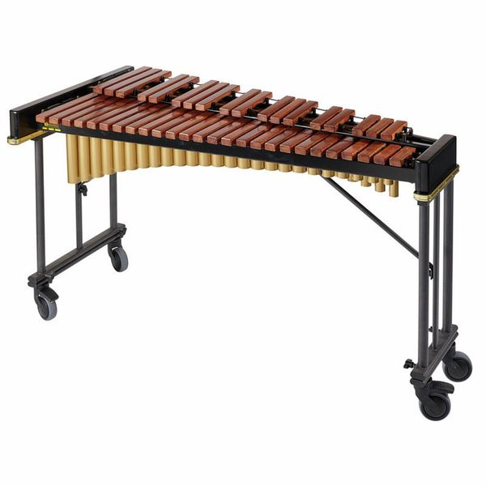
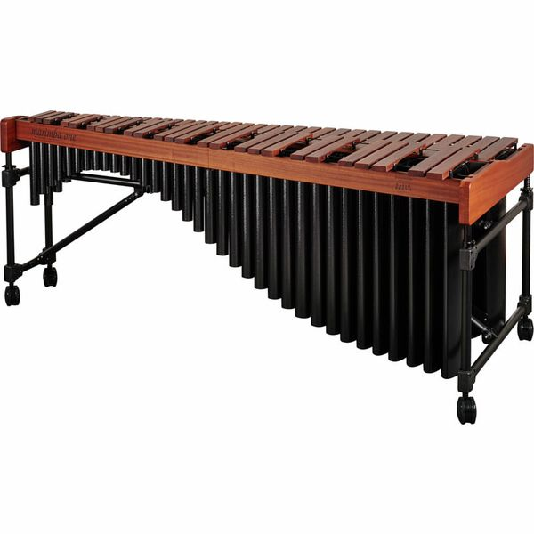
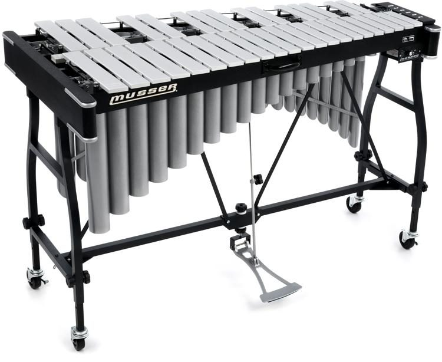
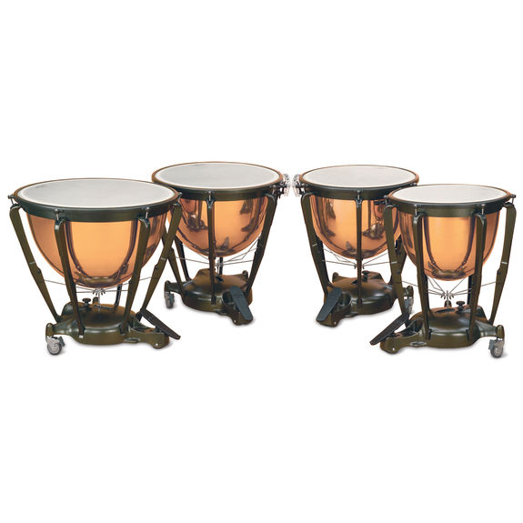
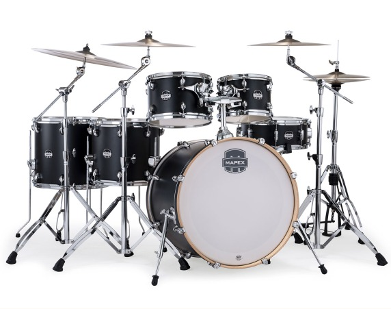

Ось і все. Це мої основні інструменти, але є ще багато видів перкусійних інструментів. Можна подивитись тут
Перкусія
Привіт всім, я Софія. Я перкусіоністка і класичний ударник. Я хочу познайомити вас з інструментами на яких я вмію грати.
Сім'я Ударних
Родина ударних – найбільша в оркестрі. До ударних інструментів належать будь-які інструменти, які видають звук під час удару, струшування чи подряпин. Бути перкусіоністом нелегко, тому що потрібно багато практики, щоб вдарити по інструменту з потрібною силою, у потрібному місці та в потрібний час. Деякі ударні інструменти налаштовані й можуть відтворювати різні ноти, як-от ксилофон, литаври чи фортепіано, а деякі ненастроєні без певної висоти, як-от бас-барабан, тарілки чи кастаньєти. Ударні інструменти зберігають ритм, створюють особливі звуки, додають збудження та колориту. На відміну від більшості інших гравців в оркестрі, перкусіоніст зазвичай грає на багатьох різних інструментах в одному музичному творі. До найпоширеніших ударних інструментів в оркестрі належать литаври, ксилофон, цимбали, трикутник.
Ксилофон
Ксилофон спочатку прийшов з Африки та Азії, але має грецьку назву, що означає «звук дерева» . Сучасний ксилофон має дерев’яні бруски або клавіші, розташовані як клавіші піаніно, по яких гравець б’є паличками. Ви можете змінювати якість висоти, використовуючи різні види палочків (тверді або м’які), а також різними способами ударяючи по дерев’яних брусках. До нижньої частини дерев’яних брусків прикріплені металеві трубки, які називаються резонаторами, де звук вібрує. Це надає ксилофону яскравий звук, схожий на дзвін.
Марімба
Марімба – це ударний інструмент африканського походження, популяризований у Центральній Америці. Він складається з набору дерев’яних брусків різної довжини. На ньому грають 2-ма або 4-ма палками, тоді як резонатори або труби під смугами створюють посилення відтворюваних нот. Він більший, ніж ксилофон. І на ньому можуть грати як одна людина, так і дві.
Вібрафон
Вібрафон — інструмент сімейства ударних, також відомий як вібратори або вібраарфа. Вібрафон схожий на ксилофон за своєю загальною конструкцією, але він має алюмінієві, а не дерев’яні стрижні. Вібрафон також має демпферну педаль, яка дозволяє змінювати звук, який створюється під час удару молотків по брусках. Педаль також змінює тривалість звучання звуку. Вібрафон, яким він є сьогодні, є відносно новим інструментом, оскільки він був розроблений лише в 1927 році після того, як Генрі Шлютер зробив кілька вдосконалень у попередньому інструменті, винайденому на початку 1920-х років компанією Leedy Manufacturing Company у США.
Литаври
Литаври схожі на великі поліровані чаші або перевернуті чайники, тому їх ще називають литаврами. Це великі мідні каструлі з барабанами, виготовленими з телячої шкіри або пластику, натягнутими на верхню частину. Литаври — це налаштовані інструменти, тобто вони можуть грати різні ноти. Литавр змінює висоту, розтягуючи або послаблюючи головки барабанів, які прикріплені до ножної педалі. Литаври є центральною частиною сімейства ударних, оскільки вони підтримують ритм, мелодію та гармонію. Більшість оркестрів мають чотири литаври різного розміру та налаштовані на різну висоту звуку, і зазвичай на них грає один музикант, який б’є по головках барабанів молотками або дерев’яними паличками. Литаврист повинен мати дуже добрий слух, тому що йому/їй зазвичай потрібно змінювати висоту звуку барабанів під час виступів.
Ударна установка
Ударна установка — це набір барабанів , тарілок та інколи інших допоміжних ударних інструментів, на яких може грати одна особа. Барабанщик зазвичай тримає пару відповідних барабанних паличок і використовує ноги для керування педалями хай-хета та бас- барабану .
Стандартний комплект зазвичай складається з:
- Малий барабан , встановлений на підставці
- Бас - барабан , на якому грають за допомогою стулата , що рухається ножною педаллю
- Один або кілька томів , включаючи томи-стійки та/або підлогові томи
- Одна або кілька тарілок , у тому числі тарілка райд і тарілка краш
- Тарілки хай-хет , пара тарілок, на яких можна грати за допомогою ножної педалі